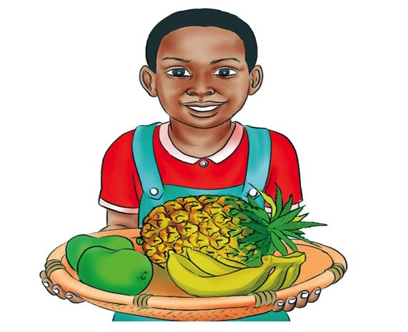
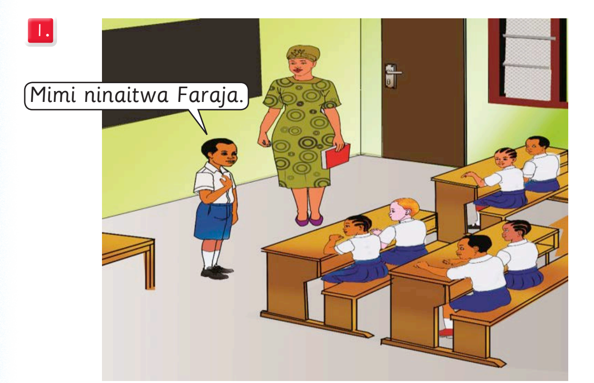

Chunguza picha na mazungumzo, kisha andika alama za uandishi zilizotumika; tumia eneo la kuandikia, kibodi au Breli.

Dada amebeba ndizi, maembe na nanasi.
Mimi ninaitwa Faraja.Chunguza picha na mazungumzo, kisha andika alama za uandishi zilizotumika; tumia eneo la kuandikia, kibodi au Breli.

Dada amebeba ndizi, maembe na nanasi.